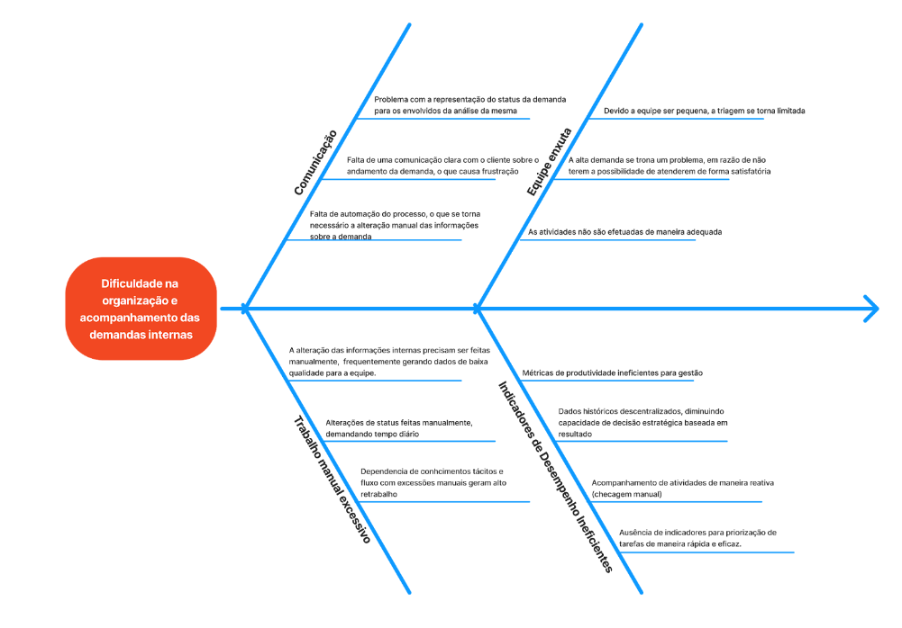

Cenário Atual
Histórico de Revisão
| Data | Versão | Descrição | Autor |
|---|---|---|---|
| 01/09 | 1.0 | Criação do Documento | 232014413 - Davi Nunes; 231034716 - Gustavo Oki; 32014093 - Lucas Machado 232005343 - Marcos Filho; |
| 05/09 | 1.1 | Correção do Documento | 232014638 - Caio Soares; 232014413 - Davi Nunes; 231034716 - Gustavo Oki; |
| 15/09 | 1.2 | Primeira Entrega Final do documento de Visão do Produto e Projeto | 232001371 - Caio Rocha; 232014638 - Caio Soares; 232014413 - Davi Nunes; 231034716 - Gustavo Oki; 232014093 - Lucas Machado; 232005343 - Marcos Filho; |
1 CENÁRIO ATUAL DO CLIENTE E DO NEGÓCIO
1.1 Introdução ao Negócio e Contexto
O escritório Cortes, Santos Advogados (fundado em 27 de junho de 2018) atua como sociedade individual de advocacia, oferecendo soluções jurídicas personalizadas nas áreas consultiva, administrativa e contenciosa. Possui mais de 400 processos ativos distribuídos por praticamente todos os estados do Brasil, com atuação em licitações e contratos, tendo trabalhos especializados em diversas áreas do Direito: Civil, Administrativo, Previdenciário, Tributário, do Consumidor, Trabalhista e Empresarial. Apresenta um perfil conservador e orientado à minimização de riscos, priorizando soluções que evitem prejuízos ao cliente, enquanto sua gestão administrativa busca eficiência operacional.
O funcionamento do escritório age de uma forma enxuta e orientada por demandas: o sócio organiza e distribui as tarefas do dia a dia (feitas por planilhas Excel), executando prazos, preparando peças e acompanhando andamentos processuais. Têm-se atenção especial à confidencialidade, agilidade e ao atendimento pós-contratual, preservando um relacionamento pessoal e direto com cada cliente.
Mesmo que o escritório tenha implementado sistemas de gestão jurídica, como o Astraea, que se mostraram úteis para o controle rigoroso de prazos processuais e a centralização de documentos, sua rigidez provou-se um impeditivo crucial para a nossa principal necessidade e objetivo: a gestão dinâmica do fluxo de trabalho interno. Nesse sentido, o obstáculo central reside na falta de visibilidade e previsibilidade sobre o andamento das tarefas. Dessa forma, torna-se inviável rastrear de forma clara em qual etapa uma demanda se encontra, seja na fase de elaboração com o advogado júnior, pendente de revisão pelo sócio, ou aguardando documentação do cliente. Essa ausência de um fluxo estruturado gera atrasos, principalmente na transição de responsabilidade entre os profissionais, de forma a tornar o acompanhamento dos casos estratégicos uma atividade reativa e dependente de microgerenciamento, em vez de proativa e dinâmica.
Essa ineficiência se ramifica em dois outros desafios operacionais relevantes, sendo elas: a comunicação com cliente de forma manual, que consome um tempo significativo da equipe na elaboração de relatórios de andamento que poderiam ser padronizados e automatizados, e a carência de uma base de conhecimento unificada e de fácil acesso; a pesquisa por cláusulas contratuais específicas ou modelos de propostas de honorários depende da consulta a arquivos antigos e dispersos, resultando em inconsistência e retrabalho. Nesse contexto, a prioridade torna-se reestruturar o fluxo de trabalho do cliente a fim de trazer clareza, coerência e previsibilidade que culminam na eficiência do processo de qualidade e pontualidade.
O mercado de advocacia brasileiro hoje é bastante vasto e fragmentado, com um número muito elevado de profissionais e escritórios atuando em nichos e em grande concorrência, o que pressiona preços e exige diferenciação.
Há, ao mesmo tempo, uma volatilidade na demanda por serviços e uma forte aceleração na adoção de tecnologia e automação (como uso de ferramentas de IA) como forma de ganhar produtividade, reduzir tarefas repetitivas e oferecer respostas mais rápidas aos clientes. Além disso, o surgimento de regras sobre proteção de dados e compliance eleva a demanda por boas práticas de governança digital e segurança da informação nos escritórios.
Para um escritório conservador e enxuto como o Cortes, Santos Advogados, este cenário reforça a necessidade de um sistema de gestão de demandas que garanta total controle sobre o fluxo de trabalho. A solução proposta irá mapear e organizar cada caso individualmente, permitindo a automação pontual de tarefas repetitivas, como o preenchimento de formulários e gestão de documentos digitais, por exemplo, além do envio de alertas automáticos para prazos críticos. Dito isso, tais funcionalidades, implementadas em uma plataforma com segurança de dados e controle de acesso granular, visam otimizar a eficiência sem comprometer a confidencialidade, a segurança ou a relação próxima com o cliente.
1.2 Identificação da Oportunidade ou Problema

O escritório enfrenta um gargalo operacional na gestão e no acompanhamento das demandas processuais, exigindo que o sócio faça checagens diárias manuais a fim de repassar as tarefas por planilha ao estagiário. Além dessa rotina consumir um tempo crucial, que poderia ser usado para outras demandas, gera risco de retrabalho e reduz a visibilidade sobre a real responsabilidade de cada ação. Tal cenário gera frustração nos clientes, que acreditam não haver trabalho em andamento, abrindo espaço para uma solução mais simples e focada em: ordenação de demandas, indicadores de pendência/urgência e notificações automáticas aos clientes.
- Alto volume de demandas: lidam com cerca de 300--400 ativas;
- Controle manual: Excel/planilhas e fluxos informais de atribuição;
- Equipe enxuta: capacidade limitada de triagem e execução;
- Problemas com comunicação: falta de automação/alertas que informam clientes e responsáveis sobre andamentos, provocando frustração nos clientes que acreditam não haver trabalho em andamento.
Além disso, sistemas já contratados como o Astraea não se mostraram totalmente adequados ao modelo mais pessoal de atendimento do escritório, abrindo espaço para uma solução sob medida, que atenda às necessidades específicas do cliente.
1.3 Desafios do Projeto
Os principais desafios do projeto decorrem tanto de aspectos técnicos quanto organizacionais, pois é preciso substituir o controle manual por planilhas e as checagens diárias por uma gestão automatizada, sem perder o modelo de atendimento pessoal e confidencial que caracteriza o escritório.
Tecnicamente, o maior desafio é a falta de acesso a sistemas jurídicos legados ou anteriormente testados pelo cliente. Não ter acesso a essas plataformas, como o Astraea, dificulta a realização de testes de interoperabilidade. Isso nos obriga a focar na criação de uma solução com uma estrutura de dados robusta e flexível, que permita a migração segura das informações do Excel, além de um design de sistema que se adapte, de forma simplificada, à diferentes possíveis formatos de dados no futuro.
Do ponto de vista operacional, o projeto precisa conciliar a automação com a preservação da experiência personalizada do cliente. Dessa maneira, torna-se essencial prever treinamento e gerenciar a mudança de hábitos da equipe enxuta para garantir adesão e evitar retrabalho. Além disso, é crucial operar com as restrições orçamentárias e de tempo do sócio responsável. Para mais, existem ainda desafios legais e de segurança, como garantir a confidencialidade e os controles de acesso por processo/estado, além da conformidade com as boas práticas de gestão de dados. A complexidade aumenta por lidar com processos distribuídos em vários estados, cerca de 300 a 400 processos ativos, o que exige regras e exceções específicas.
Por fim, será crucial medir o impacto do projeto por meio de indicadores claros de redução de tempo manual, melhoria na satisfação do cliente e diminuição de erros. A implantação faseada da solução será determinante para o sucesso, pois ajudará a minimizar os riscos operacionais.
1.4 Segmentação de Clientes
Nosso produto de software será direcionado principalmente a dois perfis de usuários, com faixa etária entre 20 e 55 anos: sócios/advogados experientes e estagiários/advogados em início de carreira. A seguir, detalhamos cada grupo:
- Sócios e Advogados Experientes: este grupo é composto, em sua maioria, por profissionais entre 30 e 55 anos, com média de 12 a 25 anos de experiência na advocacia. Normalmente ocupam cargos de liderança, como sócios ou gestores de escritórios. São responsáveis pela administração do negócio, prospecção de clientes e supervisão das operações jurídicas e administrativas. A principal dificuldade enfrentada por esse perfil é o excesso de tarefas manuais de controle e delegação, que consomem tempo e dificultam a visão geral do andamento das demandas. Seu objetivo é otimizar demandas, reduzir custos administrativos e direcionar esforços para atividades de maior valor estratégico.
- Estagiários e Profissionais em Início de Carreira: composto por jovens entre 20 e 28 anos, geralmente com até 5 anos de experiência na área jurídica. Esse grupo atua em atividades operacionais e de apoio, como elaboração de minutas, acompanhamento processual e atualização de informações. São profissionais que necessitam de uma ferramenta intuitiva para organizar demandas, atualizar status em tempo real e se comunicar de forma ágil com seus gestores. O objetivo principal é ganhar eficiência no dia a dia, aprender com mais clareza os fluxos internos e acelerar o desenvolvimento na carreira.